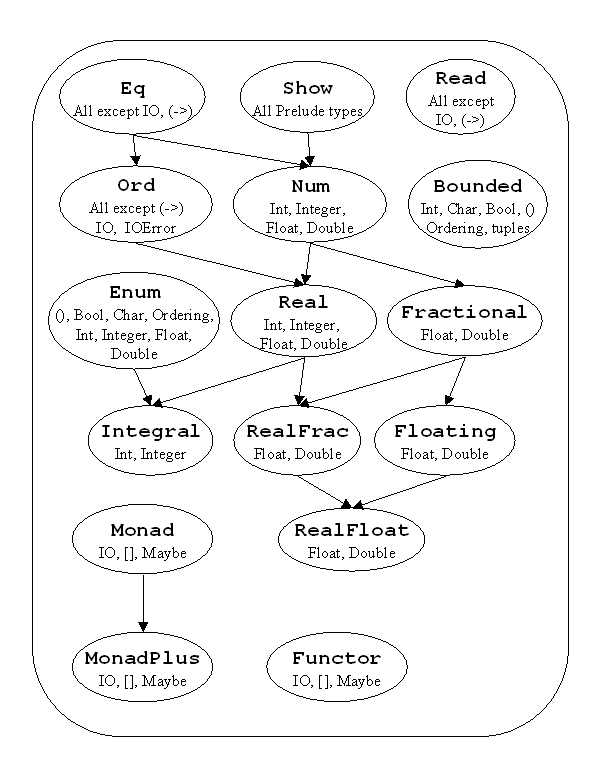

Haskell 2
© Eileen Head, Leslie C. Lander, 2002
Purpose: To understand Haskell's error messages and how Haskell
types works.
Goal: To understand different definitions of polymorphism.
To understand Classes
which are sets of types and static type checking work.
How to use Classes to develop
generic code in Haskell.
Notes1.lhs has codes presented in these notes as well as other
examples.
http://haskell.org/onlinereport/prelude-index.html
: Hyperlink reference to Prelude.hs
(Note Prelude.hs is coded in Traditional style--all code in my notes
use literal style.)
Polymorphism:
- Ways the Language allows you to code routines with the same
identifier but the actual parameters can be of different types.

- Polymorphism is a bad term to use.
- Helpful definitions:
- “A function or operator is polymorphic
is it has at least two possible types.”1
- “A function or operator exhibits ad hoc polymorphism if it has at least two
but only finitely many
possible types.”1
- “A function or operator exhibits universal polymorphism if it has
infinitely many possible types”
Coercion
- Implicit conversion of one type to the type expected by the
called routine.
- Haskell, Ada require explicit conversion which is like casing
in C (Java/++)
- 4.5 + 6 in most languages is probably 4.5 + 6.0
- + is usually an overloaded operator, adding integers or reals
(floats)
- Usually addition of reals
- The Louden describes a PL/I’s problem: (Rule: fractional value’s
precision must be maintained.)
1/3 + 15 returns 5.33333333333333
- Type widening is more natural than type narrowing in
general.
- type widening
- int to real
- 2-byte int to 4 byte int
- type narrowing
- real to int
- Coercion is implicit.
- The programmer should be aware:
- The same code is executed for different types
- The primitive type is changed and stored in a temporary
location for use.
Overloading
- When the same symbol translates to different code based on the
actual parameter types:
We say that the operator/function is overloaded. - In most
languages
‘+’ corresponds to different code i.e.:
Vs
- Java adds another meaning to ‘+’
- Ada and C++ allow users to overload operators.
- C has no USER overloading -- operators or functions
- C and Java DO Not allow users to overload operators.
- Overload
Example from Ada
Dangerous Overloading of Operators
- z = &y /* assign the address of y to x */
- z = x & y /*assign the bit-wise AND of x and y */
- Fortran:
( If SUM=20 and COUNT=30 are integers and AVG is a real variable. Then
AVG will be 0.0) - Pascal uses a different symbols for integer
division
and real division. div vs ‘/’
- Ada makes the above statement illegal since the types do not
match!
Polymorphic Routines (Parametric Polymorphism)
- The same code for different data types.
- Haskell Examples
> length [ ] = 0
> length (a:x) = 1 + length x
> rev :: [t] -> [t]
> rev [] = []
> rev (a:x) = rev x ++ [a]
> id :: t -> t
> id x = x
> zip :: [t] -> [u] -> [(t,u)]
> zip (a:x) (b:y)=(a,b):zip x y
> zip _ _ = []
Sometimes there are constraints on the polymorphism: The code
for
“member” has to constraint in the expression “a == b” requiring
elements have
to be of an equality type. (See below)
- However, many types are instances of the class Eq
- Ada has generic subroutines.
- Both Ada and Haskell have a mechanism to explicitly indicate what
function are required. (See Haskell classes)
- C++ has template functions and template classes.
- C++ uses implicitly constrained polymorphism
Haskell classes
- In previous lecture we saw user defined types.
> data People = Person String Int
- In previous lecture we how functions can be defined for a
specific Type.
> memberI :: Int -> [Int] -> Bool
> memberI x (h:t) = if (x == h) then True else memberI x t
> memberI _ [] = False
- In previous lectures we saw that Haskell can infer the most
general data types.
> memberG x (h:t)= if (x == h) then True else
memberG x t
> memberG _ [] = False
memberG has the following type:
Notes1> :t memberG
memberG :: Eq a => a -> [a] -> Bool
- Entities such as “Eq,” “Ord,” “Show” provide collections
of types.
- For example, “Eq” contains several types, including “Bool,”
“Char,” “Int,” “Integer,” “Float,” “Double”
. Therefore memberG can use data types like Bool, Char Int etc
whereas memberI can only use Int data.
- Such collections of types in Haskell are called classes.
- In fact one can specify the most generic types:
> member :: Eq a => a -> [a] ->
Bool
> member x (h:t)= if (x == h) then True else member x t
> member _ [] = False
Haskell classes are different
- Classes are
- NOT the same as Java classes
- More like Java’s interface
- Somewhat like a C++ template
- Classes require function overloading
- Definition of a function is different for different types to
which it is applied
- Types must declare themselves to be in a class AND must have
the functions specified in the Class implemented.
> instance Eq Char where
> c == c'
= fromEnum c == fromEnum c'
Basic class examples
- Defining a Haskell class:
- Class name which begins with a Capital letter
- one or more functions that must be defined for any type in the
class
i.e. Eq has the functions “==” and “/=”
Ord has the functions “==” “/=” “<”
“<=” “>” “>=” “max” “min”
- The relationship between language defined classes are below:

Details of defining Classes
- This is how Prelude defines the class EQ:
> class Eq a where
>
(==), (/=) :: a -> a -> Bool
-- Minimal complete definition:
-- (==) or (/=)
> x /= y = not (x == y)
>
x == y = not (x /= y)
- An alternative definition:
> class Eq t where
> (==), (/=)::t -> t -> Bool
> a /= b = not (a == b)
Notice you can define the functions in the class or not.
The alternative class definition of Eq requires the user to
define "==" whereas you have a choice using the Prelude "Eq" class .
- Classes can allow for subtyping.
- Types in Ord are subtypes of EQ.
> class Eq t => Ord t where
> (<), (<=), (>), (>=) :: t -> t -> Bool
> max, min :: t -> t -> t
For a type to be in a class such as Ord, it must define
all the functions in Eq and Ord.
In fact Ord is derived from Eq.
Ord inherits the operations from Eq.
- Inheritance and subtyping are central ideas of object-oriented
languages.
- The different between object-oriented languages and Haskell is
the binding time of the code related to the subtypes.
- Haskell is static binding whereas object-oriented languages is
dynamic binding.
- C++ templates work the same way as classes.
Any variable of type in Ord can be substituted for a variable of
type in Eq.
- Therefore the function member can be applied to
variables of type in Ord.
- Similar idea in object-oriented languages.
Defining a type to be in a class
- The following example is shown in the Haskell book:
> instance Eq Bool where
> True == True = True
> False == False = True
> _ == _ = False
- The keyword instance indicates the type you are
defining is in the class named.
- For the class Eq only one function needs to be defined.
You get "/=" for free.
- Show is another class in Prelude. The
function show like "toString" in Java.
> class Show a where
>
showsPrec :: Int -> a
-> ShowS
> show
:: a -> String
>
showList :: [a] ->
ShowS
- To use the function show to display values the Hugs
runtime must be set. The user defined type Person is not an
instance of Show so we get the following runtime error.
Notes1> :set +u
Notes1> Person "Name" 3
ERROR - Cannot find "show"
function for:
*** Expression : Person
"Name" 3
*** Of
type : People
Notes1> :set -u
Notes1> Person "Name" 3
People_Person "Name" 3
Numeric types
Num class provides several basic operations common to all
numeric types;
> (+), (-), (*) :: (Num a)
=> a -> a -> a
> negate, abs :: (Num a) => a ->
a
Num does not provide a division operator
Primitive vs constructured numbers
The standard numeric types, Int, Integer, Float, and Double are
primitive.
Both Int and Integer are in the Class Integral but Int is fix
size integer but Integer is an arbitrary precision integer
The others are made from these by type constructors RealFloat
type:
There is NO implicit coercion!
fromInteger
:: (Num a) => Integer -> a
fromRational
:: (Fractional a) => Rational -> a
toInteger
:: (Integral a) => a -> Integer
toRational
:: (RealFrac a) => a -> Rational
fromIntegral
:: (Integral a, Num b) => a -> b
fromRealFrac
:: (RealFrac a, Fractional b) => a -> b
- 2 :: Num a => a
-
Merge
- 2 :: Num a => a
- What is the type of []?
> merge [] lst = lst
> merge lst [] = lst
> merge (a:x) (b:y)
> | a <= b = a:merge x (b:y)
> | a > b = b:merge (a:x) y
...> :t merge
merge :: Ord a => [a] -> [a] -> [a]
...> merge [1,3] [2,4]
[1,2,3,4]
...> merge [] []
ERROR - Unresolved overloading
*** Type : Ord a => [a]
*** Expression : merge [] []
...> merge [] ([]::[Int])
[]
...> merge [] [] ([]::[Ord])
ERROR - Undefined type constructor "Ord"
Default declaration available for numbers only
See Online
report on Numbers
See online
tutorial for more details
Numeric
Coercions and Overloaded Literals
Higher-Order Types Used in Class Declaration
-
Tree defined was as follows:
> data Tree a = Leaf a | Branch (Tree a) (Tree a)
> tree = Branch (Leaf 3) (Branch (Leaf 6) (Leaf 9))
- Tree by itself is a type constructor:
- It takes a type as an argument and returns a type as a result.
- No value can have this as a type but such "higher order" types
can be used in Class declarations.
- The following class is defined in the Standard Prelude
> class Functor f where
> fmap :: (a->b) -> f a -> f b
- f is a type that is applied to
other types
- Defining Tree in the class Functor
> instance Functor Tree where
> fmap f (Leaf x) = Leaf (f x)
> fmap f (Branch t1 t2) = Branch (fmap
f t1) (fmap f t2)
...> fmap (5 +) tree
Given an integer tree, an integer tree with 5 added to each leaf
of the
original tree.
- [ ] can easily be made an instance of Functor
> instance Functor [ ] where
> fmap = map
Modern
Programming Languages: A Practical Introduction by Adam Brooks
Webber, Franklin, Beedle &Associates, Inc , 2002

{kind=link}